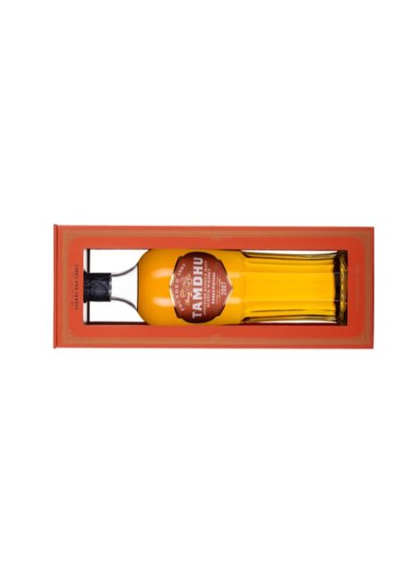

四大機場獨家風味泡麵昇展字第 115087 號・活動代碼 A3
詳情
注意是件數不是金額——不分價位、湊滿 2 瓶就送，這是四個大類裡唯一不看金額的。客人拿 1 瓶時，「再加一瓶就送兩杯泡麵」很好推。
展開四大機場門檻表、話術與注意事項
9/24 起，四大機場旅客消費達門檻就送昇恆昌獨家杯麵。酒類走的是「件數」，不是金額。
| 活動大類 | 大類代號 | 活動內容 | 區域 |
|---|---|---|---|
| 酒 | 大類 09 | 單筆滿 2 件 → 贈 2 杯 | 四大機場 |
| 文創禮品／巧克力／玩具／食品伴手禮 | 大類 07・10・11・12・13（玩具）・15 | 單筆折扣後滿 $800 → 贈 1 杯 | 松山 |
| 文創禮品／巧克力／玩具／食品伴手禮 | 大類 07・10・11・12・13（玩具）・15 | 單筆折扣後滿 $1,500 → 贈 2 杯 | 桃園／高雄／台中 |
只列酒（09）、巧克力／食品伴手禮（07）、樂高／玩具（13）這三類；公文另有香水／化妝品（01・02）等其他大類，不是你的範圍，本頁不列。
- 酒類這檔跟金額無關小瓶、大瓶、貴的便宜的都算 1 件，滿 2 件就送。客人拿 1 瓶時說「再加一瓶就送兩杯泡麵」。
- 每人限乙次、口味隨機買再多也只有一次，不能指定口味，恕不累贈。
- 一張單只能擇一門檻酒（09）、巧克力／食品伴手禮（07）、樂高／玩具（13）不能加在一起算，要分開結才各拿各的。
- 贈品要過 POS 機除帳不可以用 EIP 除帳（公文第 5 點）。這是流程規定，漏了會被追。
- 成分說明杯麵未含肉類，但調味包與麵體產線與其他泡麵共用，無法完全排除交叉接觸。素食或有嚴格需求的客人請看包裝標示自行評估；外籍旅客引導掃杯身 QRcode。
- 贈品不得轉讓、販售、兌換現金也不可作為其他交易用途。
另有現場活動「黃金秒數・壓秒計時挑戰」（每日 08:00–20:00）：在壓秒計時器上成功壓出 3.0 ± 0.2 秒，即可獲得昇恆昌限定風味杯麵 1 杯，限量、口味隨機不挑款。客人沒到門檻時，這句可以接著講，不會空手。
資料來源・免責
來源：昇恆昌公文「2026 四大機場獨家風味泡麵活動」（昇展字第 115087 號，2026/09/23 發），2026/09 現場公文實拍。口味：老薑麻油風味麵（桃園／松山）、花雕蔥燒牛風味麵（台中／高雄）。實際門檻與贈品發放一律以 POS 與現場公告為準。—— 小韋整理，本頁為個人整理之速查，非公司正式公告。
| 單瓶 8／85 折 | 1 件即享 13 項 |
|---|---|
| 任 2 瓶 85 折 | 可跨品項 34 項 |
| 任 2 瓶 9／8 折 | 9 折 7・8 折 1 8 項 |
| 每瓶折金額 | −50～−300 6 項 |
| 單件 20,000 | 折 1,000（全品項） |
- 日韓港澳籍 95 折／2 瓶 9 折 8 項・國籍要 key 對
- 員購 9／95・聯名卡 95：單瓶促銷價、金酒全品項不適用
- 遇 20,000 取最優・不可放成箱折扣價
上面這張是名片大小（85×54mm），列印時會自成一頁，剪下護貝隨身帶；後面接的是折扣與贈品明細。
桃園機場入境店限定：單筆 4 件（含 1 件酒）送購物袋
10/02（五）–10/11（日）10/23（五）–10/26（一）
- 四類可以混著湊 4 件巧克力、酒、國產食品、樂高都算，但 4 件裡一定要有 1 件酒。跟泡麵 A3（各大類分開算）不一樣，這檔是跨類一起算。
- 每筆交易限 1 份數量有限、送完為止，恕不累贈——買 8 件也只送 1 個。
- 不參加的品項菸、雪茄、黃金、藥類、外招櫃。
- 只有入境店有海報寫「桃園機場入境店限定」，出境店不要講。日期跟巧克力透明旅行袋第二、三段一樣，兩檔能不能一起拿，海報沒寫，先問主管或試刷。
來源：2026/10 現場海報「潮台由我不設限 MUSE（2026.09.22–10.31）・桃園機場入境店限定」。實際贈送以 POS 與現場公告為準。
全店酒類活動
展開話術
- 單件滿 $20,000 折 $1,000 延續到 10 月10/1 公告：適用規則同上月。
- 碰到滿 $20,000比較後取對客人最有利的一項（最優處理）。
- 價格異動看調價／促銷單活動辦法只列「滿件折扣」有異動的品項；表上標「調整」而沒寫折扣的，10 月已沒有件數折扣。
- 不能放成箱折扣的價格所有品項都不行，請理級協助要求，避免影響品牌形象。
- 沒有可售現貨，不要先答應客人價格和活動內容以購買時為準，避免客訴。
已失效酒類折扣 9 月有、10 月沒有 — 現場 POP 要撤，比對時再打開
全店酒類活動
- 單件滿 $20,000 折 $1,000 延續到 10 月10/1 公告：適用規則同上月。
- 碰到滿 $20,000比較後取對客人最有利的一項（最優處理）。
- 價格異動看調價／促銷單活動辦法只列「滿件折扣」有異動的品項；表上標「調整」而沒寫折扣的，10 月已沒有件數折扣。
- 不能放成箱折扣的價格所有品項都不行，請理級協助要求，避免影響品牌形象。
- 沒有可售現貨，不要先答應客人價格和活動內容以購買時為準，避免客訴。
10 月滿額贈
10 月正在跑的贈品活動全列，新增與異動的用「新／改」標出。滿數量可累贈／滿金額不可累贈；同一正貨多個門檻時擇一贈送，除非標「可重複贈」。
已失效贈品活動 9 月有、10 月取消 — 要比對新舊時再打開
10 月酒類折扣圖牆
同一個折數的放在一起，只看圖就好。點圖可開到酒類百科那支酒。
 百齡罈23年調和威士忌
百齡罈23年調和威士忌 凱普多尼克 泥煤 25 年
凱普多尼克 泥煤 25 年 朗摩 25 年
朗摩 25 年 波摩 31 年 時光永恆系列（全球限量 3,000 瓶）
波摩 31 年 時光永恆系列（全球限量 3,000 瓶） 波摩 33 年 時光永恆系列（全球限量 3,000 瓶）
波摩 33 年 時光永恆系列（全球限量 3,000 瓶） 波摩 33 年 FQ
波摩 33 年 FQ 格蘭菲迪 31 年 Grand Château 波爾多紅酒桶
格蘭菲迪 31 年 Grand Château 波爾多紅酒桶 宮城峽Grande單一麥芽威士忌
宮城峽Grande單一麥芽威士忌 竹鶴Grande調和麥芽威士忌
竹鶴Grande調和麥芽威士忌 余市Grande單一麥芽威士忌
余市Grande單一麥芽威士忌


 格蘭傑12年 The Accord 雅閣 單一麥芽威士忌
格蘭傑12年 The Accord 雅閣 單一麥芽威士忌 格蘭傑 16 年 The Vindima 1L（旅人專屬）
格蘭傑 16 年 The Vindima 1L（旅人專屬） 亞伯樂13年單一純麥威士忌
亞伯樂13年單一純麥威士忌 亞伯樂 15 年 Small Batch
亞伯樂 15 年 Small Batch 亞伯樂16年單一純麥威士忌
亞伯樂16年單一純麥威士忌 亞伯樂 17 年 Small Batch
亞伯樂 17 年 Small Batch 亞伯樂18年單一純麥威士忌
亞伯樂18年單一純麥威士忌 亞伯樂 A'bunadh 原桶強度 單一麥芽威士忌
亞伯樂 A'bunadh 原桶強度 單一麥芽威士忌 亞伯樂 Suthainn
亞伯樂 Suthainn 格蘭利威 開創者系列 第一章：向內之旅 0.7L
格蘭利威 開創者系列 第一章：向內之旅 0.7L 格蘭利威 14 年 桶匠精選 單一麥芽威士忌
格蘭利威 14 年 桶匠精選 單一麥芽威士忌 格蘭利威 16 年 桶匠精選 單一麥芽威士忌
格蘭利威 16 年 桶匠精選 單一麥芽威士忌 格蘭利威 19 年 桶匠精選 單一麥芽威士忌
格蘭利威 19 年 桶匠精選 單一麥芽威士忌 皇家禮炮21年黑禮炮泥煤版
皇家禮炮21年黑禮炮泥煤版 皇家禮炮 21 年 馬球系列 POLO 5
皇家禮炮 21 年 馬球系列 POLO 5 R.S 21YO Vintage 2002調和威士忌
R.S 21YO Vintage 2002調和威士忌 皇家禮炮25年寶石版調和威士忌
皇家禮炮25年寶石版調和威士忌 波摩 10 年 Aston Martin 聯名（第二版）
波摩 10 年 Aston Martin 聯名（第二版） 波摩 15 年 Aston Martin 聯名（第二版）
波摩 15 年 Aston Martin 聯名（第二版） 格蘭菲迪 19 年 馬德拉桶 單一麥芽威士忌
格蘭菲迪 19 年 馬德拉桶 單一麥芽威士忌 魁列奇13年單一麥芽威士忌
魁列奇13年單一麥芽威士忌
坦杜 Ambar 2008 年份 湯瑪汀 12 年
湯瑪汀 12 年 湯瑪汀 16 年
湯瑪汀 16 年 湯瑪汀 21 年
湯瑪汀 21 年 Hinotori Goldorak
Hinotori Goldorak Hinotori Goldorak 泥煤版
Hinotori Goldorak 泥煤版 明石 藍標威士忌
明石 藍標威士忌 明石杜氏調和威士忌
明石杜氏調和威士忌 明石杜氏雪莉桶威士忌
明石杜氏雪莉桶威士忌 忍 輕泥煤 水楢桶 10 年
忍 輕泥煤 水楢桶 10 年 忍 純麥 水楢桶 10 年
忍 純麥 水楢桶 10 年 忍 純麥 水楢桶 15 年
忍 純麥 水楢桶 15 年 忍純麥15年龍年水楢桶威士忌
忍純麥15年龍年水楢桶威士忌


尚無照片：凱歌 VCP LGD Blance18 0.75L


共 70 支，其中 1 支百科尚無照片（列在各組下方）。圖片取自昇恆昌酒類速讀檔案，折扣分組依 2026/10 活動辦法（10/01 生效）。—— 小韋整理，⚠ 實際折抵以 POS 為準。